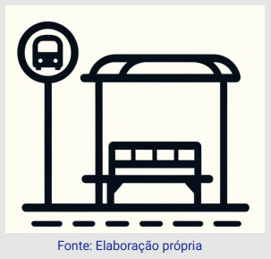
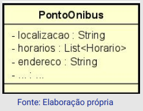
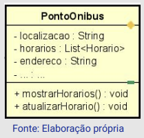
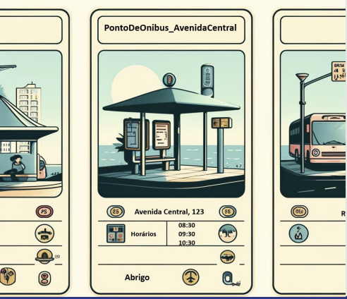
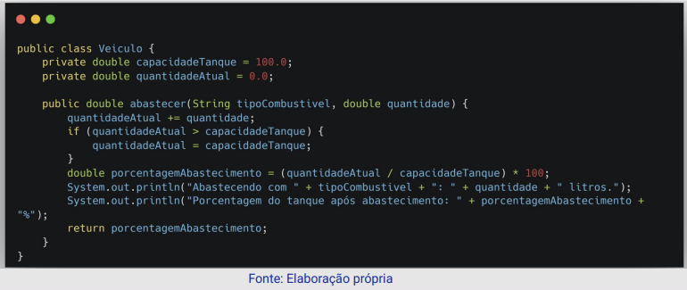
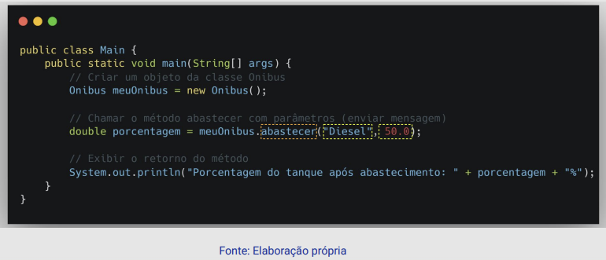
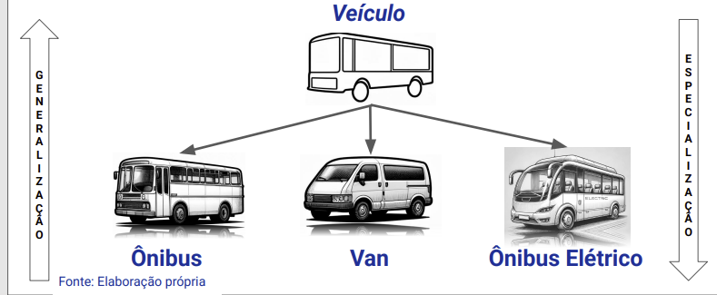

Disciplinas
ANÁLISE E PROJETO DE SOFTWARE ORIENTADO A OBJETOS. Concluído
Materiais
Vídeo 1 - Análise e Projeto de Software Orientado a Objetos - Módulo 1 - Unidade 2 sendProf° ministrante: Luciano Édipo Pereira da Silva.
Conteúdo
Conceitos de Orientação a Objetos
- Abstração;
- Objetos;
- Atributos;
- Métodos;
- Classes;
- Encapsulamento;
- Mensagens;
- Relacionamentos;
- Herança e Polimorfismo.
Abstração.
- Mecanismo usado em análise de domínio para representar o escopo;
- Consiste em observar um recorte da realidade e representá-lo, considerando entidades, ações e caracterizações necessárias para uma determinada aplicação, deixando de fora aspectos que se julgue irrelevantes pro contexto;
- Um mesmo cenário pode ser abstraído de formas diferentes, dependendo do interesse do observador na análise.
Objetos.
- Abstração de uma entidade da realidade que possui características e operações inerentes no contexto observado;
- Num sistema, compõe-se da representação de um estado interno, com valores armazenados e modificados (atributos), e de seu comportamento, como um conjunto de ações pré-definidas que é capaz de executar (métodos);
- Objetos podem ser construídos, ser modificados, desempenhar ações e ser destruídos ao longo da execução de um sistema.

- Identificação de elementos reais;
- O elemento como objeto;
- A representação.
Atributos.
- Representam os elementos de dados que caracterizam um objeto;
- Descrevem características e informações que só devem ser manipuladas por operações inerentes ao objeto;
- São variáveis que descrevem o estado de um objeto, ou seja, caracterizam o objeto num dado momento.

Métodos
- Também chamados de Operações, podem alterar o estado de um objeto;
- Procedimentos definidos e declarados que atuam em um objeto;
- Descrevem uma sequência de ações a ser executada por um objeto, especificando como fazer alguma atividade;
- Junto aos atributos, compõem os objetos, não podendo ser considerados isoladamente.

Classes
- Agrupamento de objetos que compartilham a mesma estrutura, sendo representados pelo mesmo conjunto de atributos e métodos;
- Abstrai um conjunto de objetos similares dentro do escopo representado;
- A instanciação de uma Classe se torna um Objeto, dando valores próprios a cada um dos atributos elencados.

- Ponto De Ônibus Avenida Central:
- Localização: "Avenida Central, 123"
- Abrigo: true
- Horários: ["08:30", "09:30", "10:30"]
Encapsulamento.
- Característica que consiste em esconder e proteger detalhes de implementação entre as entidades do sistema;
- Em OO, é alcançado pela privacidade dos Atributos de um Objeto, em contraparte à publicidade de seus Métodos;
- Restringe a visibilidade e acesso às regras e características dos Atributos de um Objeto, enquanto aumenta legibilidade e manutenibilidade das Operações pela modularização e responsabilização.
Mensagens.
- Compõem o mecanismo que permite a comunicação entre objetos, respeitando o encapsulamento e mesmo assim criando interoperabilidade de objetos diferentes;
- São compostos por um nome simbólico (Seletor) que descreve a operação que o objeto emissor deseja que o objeto receptor execute, e um conjunto de argumentos que a mensagem carrega, com ordem definida, necessários para a execução correta do método (Parâmetros).


Relacionamentos.
- Objetos podem possuir relações expressas um com outro;
- Em geral, se dão quando uma característica de uma entidade representada possui tal complexidade que se torna um objeto à parte;
- Exemplo: um Ônibus possua uma parada “Ponto_de_Onibus”. Estes elementos apresentam características suficientes para que possuam uma conexão de relação.
Herança e Polimorfismo.
- Herança é o nome dado ao mecanismo que permite definir uma nova Classe (Subclasse) a partir de uma classe pré-existente (Superclasse);
- Nesse caso, a Subclasse herda todas as características da Superclasse, seus atributos e métodos;
- A Subclasse pode possuir outros atributos adicionais, bem como sobrescrever métodos herdados ou adicionar novas operações.

- Quando um Objeto recebe uma mensagem solicitando a execução de um método, a procura pela operação determinada começa na classe do Objeto receptor e, caso sua implementação não se encontre ali, a busca continua na Superclasse;
- Uma Subclasse pode herdar de múltiplas Superclasses, absorvendo as características de todas elas. Herança e Polimorfismo
- O Polimorfismo em OO diz respeito à qualidade de um objeto ser capaz de assumir formas diferentes;
- Um objeto que instancia uma Subclasse numa cadeia de Herança, por exemplo, pode sobrescrever a execução de um método, mantendo sua assinatura (Overriding);
- Nesse caso, é possível invocar ambas as versões do método (com o uso do operador Super, por exemplo). Herança e Polimorfismo
- Uma classe pode apresentar mais de um método com o mesmo seletor, sobrecarga de método, mas com diferentes assinaturas (Overloading);
- Nesse caso, o método a ser executado é selecionado em tempo de execução, observando-se a assinatura que melhor satisfaz a mensagem enviada.